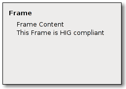

| Top |
GimpFrameGimpFrame — A widget providing a HIG-compliant subclass of GtkFrame. |
 |
GObject ╰── GInitiallyUnowned ╰── GtkObject ╰── GtkWidget ╰── GtkContainer ╰── GtkBin ╰── GtkFrame ╰── GimpFrame
GtkWidget *
gimp_frame_new (const gchar *label);
Creates a GimpFrame widget. A GimpFrame is a HIG-compliant variant of GtkFrame. It doesn't render a frame at all but otherwise behaves like a frame. The frame's title is rendered in bold and the frame content is indented four spaces as suggested by the GNOME HIG (see http://developer.gnome.org/projects/gup/hig/).
Since: GIMP 2.2